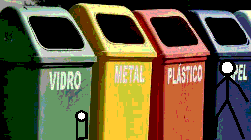

Integrantes
Alexander Uziel Hernández Rosas
Oliver Alejandro Pintor Teloxa
Eliseo García Chumacero
Anuar Yael Cadena Lima
Registrarse
Los datos se guardan localmente en tu navegador (demo). Para producción necesitarás backend.
Iniciar sesión
Si ya te registraste, usa el mismo correo y contraseña.
Plantas disponibles
Información de la planta

Nombre común: -
Nombre científico: -
Usos / Beneficios: -
Cuidados: -
Hábitat: -
Importancia de las 3R (Reducir, Reutilizar, Reciclar)

Las 3R son una estrategia fundamental para la conservación del medio ambiente. Su objetivo es disminuir la cantidad de residuos que generamos, reducir el consumo de recursos naturales y fomentar una cultura de sostenibilidad.
Reducir: consumir menos y de manera responsable, evitando productos desechables o con empaques innecesarios.
Reutilizar: darle una segunda vida a los objetos, extendiendo su uso y evitando que se conviertan en basura.
Reciclar: transformar los desechos en nuevos productos mediante separación y procesamiento de materiales.
Beneficios de aplicar las 3R:
- Protege el medio ambiente.
- Reduce la contaminación de suelo, agua y aire.
- Ahorrar recursos naturales y energía.
- Genera conciencia y hábitos de consumo responsable.
Consecuencias si no se aplican:
- Acumulación de basura en calles, ríos y mares.
- Contaminación del suelo, agua y aire.
- Pérdida de biodiversidad y hábitats naturales.
- Agotamiento de recursos naturales y mayor consumo energético.
Clasificación de la Basura
Clasificar correctamente los residuos es esencial para mantener la limpieza, facilitar el reciclaje y evitar la contaminación del suelo, agua y aire.
Los tipos principales de basura son:
- Orgánica: restos de alimentos, hojas, cáscaras y materiales biodegradables. Se puede convertir en composta para enriquecer el suelo.
- Inorgánica: plásticos, metales, vidrios y otros materiales no biodegradables que pueden reciclarse si se separan correctamente.
- Peligrosa: desechos con sustancias tóxicas o contaminantes, como pilas, aceites, medicamentos o electrónicos. Deben manejarse en centros especializados.
- Residuos sanitarios: pañales, toallas sanitarias o cubrebocas, los cuales deben desecharse adecuadamente para evitar riesgos a la salud.
Separar la basura desde el origen facilita su reciclaje, reduce los costos de limpieza y contribuye al equilibrio ambiental. Además, fomenta una cultura ecológica y solidaria con nuestro entorno.